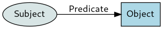
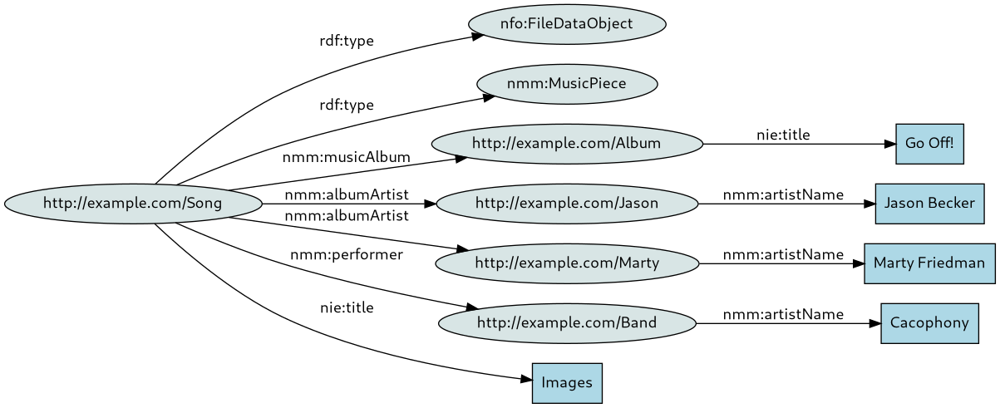
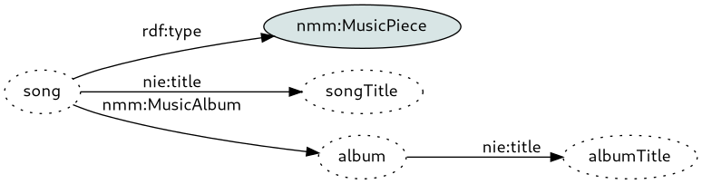

SPARQL Tutorial
This tutorial aims to introduce you to RDF and SPARQL from the ground up. All examples come from the Nepomuk ontology, and even though the tutorial aims to be generic enough, it mentions things specific to Tracker, those are clearly spelled out.
If you are reading this tutorial, you might also have Tracker installed in your system, if that is the case you can for example start a fresh empty SPARQL service for local testing:
$ tracker3 endpoint --dbus-service a.b.c --ontology nepomuk
The queries can be run in this specific service with:
$ tracker3 sparql --dbus-service a.b.c --query $SPARQL_QUERY
RDF Triples
RDF data define a graph, composed by vertices and edges. This graph is directed, because edges point from one vertex to another, and it is labeled, as those edges have a name. The unit of data in RDF is a triple of the form:
subject predicate object
Or expressed visually:

Subject and object are 2 graph vertices and the predicate is the edge, the accumulation of those triples form the full graph. For example, the following triples:
<http://example.com/Song> a nfo:FileDataObject .
<http://example.com/Song> a nmm:MusicPiece .
<http://example.com/Song> nie:title "Images" .
<http://example.com/Song> nmm:musicAlbum <http://example.com/Album> .
<http://example.com/Song> nmm:albumArtist <http://example.com/Jason> .
<http://example.com/Song> nmm:albumArtist <http://example.com/Marty> .
<http://example.com/Song> nmm:performer <http://example.com/Band> .
<http://example.com/Album> a nmm:MusicAlbum .
<http://example.com/Album> nie:title "Go Off!" .
<http://example.com/Jason> a nmm:Artist .
<http://example.com/Jason> nmm:artistName "Jason Becker" .
<http://example.com/Marty> a nmm:Artist .
<http://example.com/Marty> nmm:artistName "Marty Friedman" .
<http://example.com/Band> a nmm:Artist .
<http://example.com/Band> nmm:artistName "Cacophony" .
Would visually generate the following graph:

The dot after each triple is not (just) there for legibility, but is
part of the syntax. The RDF triples in full length are quite
repetitive and cumbersome to write, luckily they can be shortened by
providing multiple objects (with , separator) or multiple
predicate/object pairs (with ; separator), the previous RDF could be
shortened into:
<http://example.com/Song> a nfo:FileDataObject, nmm:MusicPiece .
<http://example.com/Song> nie:title "Images" .
<http://example.com/Song> nmm:musicAlbum <http://example.com/Album> .
<http://example.com/Song> nmm:albumArtist <http://example.com/Jason> , <http://example.com/Marty> .
<http://example.com/Song> nmm:performer <http://example.com/Band> .
<http://example.com/Album> a nmm:MusicAlbum .
<http://example.com/Album> nie:title "Go Off!" .
<http://example.com/Jason> a nmm:Artist .
<http://example.com/Jason> nmm:artistName "Jason Becker" .
<http://example.com/Marty> a nmm:Artist .
<http://example.com/Marty> nmm:artistName "Marty Friedman" .
<http://example.com/Band> a nmm:Artist .
<http://example.com/Band> nmm:artistName "Cacophony" .
And further into:
<http://example.com/Song> a nfo:FileDataObject, nmm:MusicPiece ;
nie:title "Images" ;
nmm:musicAlbum <http://example.com/Album> ;
nmm:albumArtist <http://example.com/Jason> , <http://example.com/Marty> ;
nmm:performer <http://example.com/Band> .
<http://example.com/Album> a nmm:MusicAlbum ;
nie:title "Go Off!" .
<http://example.com/Jason> a nmm:Artist ;
nmm:artistName "Jason Becker" .
<http://example.com/Marty> a nmm:Artist ;
nmm:artistName "Marty Friedman" .
<http://example.com/Band> a nmm:Artist ;
nmm:artistName "Cacophony" .
SPARQL
SPARQL is the definition of a query language for RDF data. How does a query language for graphs work? Naturally by providing a graph to be matched, it is conveniently called the "graph pattern".
SPARQL extends over the RDF concepts and syntax, once familiar with RDF the basic data insertion syntax should be fairly self-explanatory:
INSERT DATA {
<http://example.com/Song> a nfo:FileDataObject, nmm:MusicPiece ;
nie:title "Images" ;
nmm:musicAlbum <http://example.com/Album> ;
nmm:albumArtist <http://example.com/Jason> , <http://example.com/Marty> ;
nmm:performer <http://example.com/Band> .
<http://example.com/Album> a nmm:MusicAlbum ;
nie:title "Go Off!" .
<http://example.com/Jason> a nmm:Artist ;
nmm:artistName "Jason Becker" .
<http://example.com/Marty> a nmm:Artist ;
nmm:artistName "Marty Friedman" .
<http://example.com/Band> a nmm:Artist ;
nmm:artistName "Cacophony" .
}
Same with simple data deletion:
DELETE DATA {
<http://example.com/Resource> a rdfs:Resource ;
}
And simple graph testing:
# Tell me whether this RDF data exists in the store
ASK {
<http://example.com/Song> nie:title "Images" ;
nmm:albumArtist <http://example.com/Jason> ;
nmm:musicAlbum <http://example.com/Album> .
<http://example.com/Album> nie:title "Go Off!" .
<http://example.com/Jason> nmm:artistName "Jason Becker"
}
Which would result in true, as the triple does exist. The ASK query
syntax results in a single boolean row/column containing whether the
provided graph exists in the store or not.
Queries and variables
Of course, the deal of a query language is being able to obtain the stored data, not just testing whether data exists.
The SELECT query syntax is used for that, and variables are denoted with
a ? prefix (or $, although that is less widely used), variables act
as "placeholders" where any data will match and be available to the resultset
or within the query as that variable name.
These variables can be set anywhere as the subject, predicate or object of
a triple. For example, the following query could be considered the opposite
to the simple boolean testing the that ASK provides:
# Give me every known triple
SELECT * {
?subject ?predicate ?object
}
What does this query do? it provides a triple with 3 variables, that
every known triple in the database will match. The * is a shortcut
for all queried variables, the query could also be expressed as:
SELECT ?subject ?predicate ?object {
?subject ?predicate ?object
}
However, querying for all known data is most often hardly useful, this got unwieldly soon! Luckily, that is not necessarily the case, the variables may be used anywhere in the triple definition, with other triple elements consisting of literals you want to match for, e.g.:
# Give me the title of the song (Result: "Images")
SELECT ?songName {
<http://example.com/Song> nie:title ?songName
}
# What is this text to the album? (Result: the nie:title)
SELECT ?predicate {
<http://example.com/Album> ?predicate "Go Off!"
}
# What is the resource URI of this fine musician? (Result: <http://example.com/Marty>)
SELECT ?subject {
?subject nmm:artistName "Marty Friedman"
}
# Give me all resources that are a music piece (Result: <http://example.com/Song>)
SELECT ?song {
?song a nmm:MusicPiece
}
And also combinations of them, for example:
# Give me all predicate/object pairs for the given resource
SELECT ?pred ?obj {
<http://example.com/Song> ?pred ?obj
}
# The Answer to the Ultimate Question of Life, the Universe, and Everything
SELECT ?subj ?pred {
?subj ?pred 42
}
# Give me all resources that have a title, and their title.
SELECT ?subj ?obj {
?subj nie:title ?obj
}
And of course, the graph pattern can hold more complex triple definitions, that will be matched as a whole across the stored data. for example:
# Give me all songs from this fine album
SELECT ?song {
?album nie:title "Go Off!" .
?song nmm:musicAlbum ?album
}
# Give me all song resources, their title, and their album title
SELECT ?song ?songTitle ?albumTitle {
?song a nmm:MusicPiece ;
nmm:musicAlbum ?album ;
nie:title ?songTitle .
?album nie:title ?albumTitle
}
Stop a bit to think on the graph pattern expressed in the last query:

This pattern on one hand consists of specified data (eg. ?song must be
a nmm:MusicPiece, it must have a nmm:musicAlbum and a nie:title,
?album must have a nie:title, which must all apply for a match
to happen.
On the other hand, the graph pattern contains a number of variables, some only used internally in the graph pattern, as a temporary variable of sorts (?album, in order to express the relation between ?song and its album title), while other variables are requested in the result set.
URIs, URNs and IRIs
In RDF data, everything that can be identified does so by a URI. URIs uniquely identify an element in the RDF set, have properties that are defined by URIs themselves, and point to data that may either be other resources (identified by URI) or literal values.
Given URIs are central to RDF data and SPARQL queries, there are a number of ways to write, generalize and shorten them. URIs can of course be defined in their full form:
ASK {
<http://example.com/a> rdf:type rdfs:Resource .
<http://example.com/sub/b> rdfs:label 'One' .
}
Sadly, not everything in the world can be trivially mapped to a URI, as an aide Tracker offers helpers to generate URIs based on UUIDv4 identifiers like tracker_sparql_get_uuid_urn, these generated strings are typically called URNs.
The BASE keyword allows setting a common prefix for all URIs
in the query:
BASE <http://example.com/>
ASK {
<a> rdf:type rdfs:Resource .
<sub/b> rdfs:label 'One' .
}
Or different prefixes can be defined with the PREFIX keyword:
PREFIX ex: <http://example.com/>
PREFIX sub: <http://example.com/sub/>
ASK {
ex:a rdf:type rdfs:Resource .
sub:b rdfs:label 'One' .
}
Notice how in the first triple, subject/predicate/object now look the
same? That is because they now all are prefixed names, here the rdf
and rdfs prefixes are simply builtin.
Taking the opposite path (i.e. expanding every term), this query could be written as:
ASK {
<https://example/a> <http://www.w3.org/1999/02/22-rdf-syntax-ns#type> <http://www.w3.org/2000/01/rdf-schema#Resource> .
<https://example/sub/b> <http://www.w3.org/1999/02/22-rdf-syntax-ns#label> 'One' .
}
For the sake of familiarity, these elements have been referred to as "URIs", but these are actually IRIs, thus the unicode range is available:
INSERT DATA {
<http://example.com/💣> a rdfs:Resource
}
Filtering data
With some practice and experimentation, it should be quick to get the hang of graph patterns, and how do they match the stored RDF data. But it also quickly comes with the realization that it is completely binary, every piece of RDF data that matches the graph pattern is returned and everything else is ignored.
The FILTER keyword adds the missing further expressiveness, allowing to
define arbitrary expressions on the variables defined in the graph
pattern. E.g.:
# Get images larger than 800x600, at 4:3 ratio
SELECT ?image {
?image a nfo:Image ;
nfo:width ?width ;
nfo:height ?height .
FILTER (?width > 800 &&
?height > 600 &&
(?width / ?height = 4/3)) .
}
Conceptually, every solution given by the graph pattern runs through these filters, providing finer control over the final set of solutions. These filters are ultimately interpreted as boolean values, for example the following query:
# This returns nothing!
SELECT * {
?subject ?predicate ?object .
FILTER (false)
}
Would return no results, as every solution is filtered out.
The SPARQL language also provides a number of
builtin functions that
are suitable for use in filters (e.g. for string checks and manipulation),
these complement the relational expressions = != > >= < <=.
It is also possible to provide a list of possible values for variables to
be filtered in or out via the operators IN and NOT IN:
# Give me every folder, except those named "Music" or "Downloads"
SELECT ?song {
?folder a nfo:Folder ;
nfo:fileName ?name .
FILTER (?name NOT IN ('Music', 'Downloads'))
}
Aggregate functions
Aggregate functions are those that work over groups of solutions, e.g.:
# Tell me how many songs do I have
SELECT (COUNT (?song) AS ?count) {
?song a nmm:MusicPiece .
}
By default, there is a single group for all solutions, a different
grouping can be provided with the GROUP BY clause.
# Get the run time of each of my albums, the sum of their music pieces.
SELECT ?album (SUM (?duration) AS ?runtime) {
?song a nmm:MusicPiece ;
nfo:duration ?duration ;
nmm:musicAlbum ?album .
}
GROUP BY ?album
For numeric operations, SPARQL defines the COUNT / MIN / MAX / SUM / AVG
functions. For strings, concatenation is available via the GROUP_CONCAT
function. The SAMPLE function can be used to pick one of the values at
random.
# Give me a list of directors, with one of their movies.
SELECT ?director (SAMPLE (?movie) AS ?sample) {
?movie a nmm:Movie ;
nmm:director ?director .
}
GROUP BY ?director
Sometimes, it is desirable to apply filters on these aggregate values.
The HAVING clause behaves like FILTER, except it can be used
to apply filters on these aggregate values:
# Get music albums, but filter out singles and bonus discs (an arbitrary
# minimum of 4 songs is used for this)
SELECT ?album {
?song a nmm:MusicPiece .
nmm:musicAlbum ?album
}
GROUP BY ?album
HAVING (COUNT (?song) >= 4)
Optional data
As we have seen, the graph pattern provided in SELECT queries match as
a whole, stored RDF data either is a match (and becomes a possible solution),
or it does not. Sometimes the available data is not all that regular, so it
is desirable to create a graph pattern that can find solutions where some
variables are left blank.
The OPTIONAL clause can be used for this:
# Get songs, and their known performer(s). But audio files are often mis/unlabeled!
SELECT ?song ?performer {
?song a nmm:MusicPiece .
OPTIONAL {
?song nmm:performer ?performer .
}
}
This query will always return all music pieces, but as the song's nmm:performer
property is obtained inside the OPTIONAL clause, it does not become mandatory
to be part of the set of solutions. Contrast with:
SELECT ?song ?performer {
?song a nmm:MusicPiece ;
nmm:performer ?performer .
}
Which will only return music pieces that have a nmm:performer.
It is worth pointing out that the content of OPTIONAL { } is itself also a graph
pattern, so it also either matches as a whole or it does not. When fetching multiple
optional properties, it is a common pitfall to do:
# BAD ❌: Only songs that have both performer *and* composer will match the
# optional graph pattern. Otherwise these 2 variables will be null.
SELECT ?song ?performer ?composer {
?song a nmm:MusicPiece .
OPTIONAL {
?song nmm:performer ?performer ;
nmm:composer ?composer .
}
}
If there are multiple optional pieces of data, these must happen in separate
OPTIONAL clauses:
# GOOD ✅: Songs may have none/either/both of performer/composer.
SELECT ?song ?performer ?composer
?song a nmm:MusicPiece .
OPTIONAL {
?song nmm:performer ?performer .
} .
OPTIONAL {
?song nmm:composer ?composer .
}
}
Property paths
Up till now, we have been defining triples in the graph pattern as
sets of subject predicate object. A single predicate like that
is the simplest property path there is, it relates subject and object
directly via a labeled arrow.
Property paths make it possible to define more complex connections
between subject and object (literally, paths of properties). The /
operator may be used for concatenation:
# Get songs and their performer artist name, jumping across
# the intermediate nmm:Artist resource.
SELECT ?song ?artistName {
?song nmm:performer/nmm:artistName ?artistName
}
The | operator may be used for providing optional paths:
# Get songs and their performer/composer artist names, jumping across
# the intermediate nmm:Artist resources.
SELECT ?song ?artistName {
?song (nmm:performer|nmm:composer)/nmm:artistName ?artistName
}
The unary * and + operators may be used to define recursive paths,
* allows a 0-length property path (essentially, subject equals object),
while + requires that the property path should happen at least once.
# Get the XDG music folder, plus all its recursive contents.
SELECT ?file {
?file a nfo:FileDataObject ;
(nfo:belongsToContainer/nie:isStoredAs)* ?root .
FILTER (?root = 'file:///home/.../Music')
}
The unary ? operator makes portions of the property path optional,
matching paths with either length 0 or 1:
# Get the XDG music folder, plus all its direct contents.
SELECT ?file {
?file a nfo:FileDataObject ;
(nfo:belongsToContainer/nie:isStoredAs)? ?root .
FILTER (?root = 'file:///home/.../Music')
}
The ^ operator inverts the direction of the relation expressed
by the property path:
# The arrow goes in the other direction!
SELECT ?song ?artistName {
?artistName ^nmm:artistName ?song
}
The ! operator inverts the meaning of the match:
# Give me everything except the title
SELECT ?song ?value {
?song !nie:title ?value .
}
These operators may be all nested with ( ), allowing full
expressiveness when defining the ways subject and object are
interrelated.
Ontologies
In the RDF world, an "ontology" defines the characteristics of the data that a RDF database can hold. RDF triples that fit in its view of the world are accepted, while data that does not is rejected.
# This is good
INSERT DATA {
<a> rdf:type rdfs:Resource
};
# This is bad, this property is unknown
INSERT DATA {
<a> ex:nonExistentProperty 1000
}
Tracker defines all its ontologies on top of the RDF Schema, which provides the basic blocks to define classes (i.e. the types of the resources being stored) and the properties that each of these can have.
Basic types and literals have their own builtin classes (e.g.
xsd:string for string literals), properties can point to either
one of these builtin classes (e.g. the rdfs:label property points
to string literals), or any other class defined in the ontology.
This ability to "define the type" of properties allows to define
the structure of the data:
# This is consistent, the nmm:musicAlbum property
# must point to a nmm:MusicAlbum resource
INSERT DATA {
<album> a nmm:MusicAlbum .
<song1> a nmm:MusicPiece ;
nmm:musicAlbum <album>
}
# This is inconsistent, agenda contacts are not albums
INSERT DATA {
<contact> a nco:Contact .
<song2> a nmm:MusicPiece ;
nmm:musicAlbum <contact>
}
The ontology is defined via RDF itself, and Tracker makes it part of the data set, there are thus full introspection capabilities builtin:
# Query all available classes
SELECT ?class {
?class a rdfs:Class
}
# Query all available properties, get
# the class they belong to, and the class
# type they point to.
SELECT ?definedOn ?property ?pointsTo {
?property a rdf:Property ;
rdfs:domain ?definedOn ;
rdfs:range ?pointsTo .
}
It is even possible to use these introspection capabilities while querying the stored data:
# Get all string properties of any song.
SELECT ?song ?value {
?song a nmm:MusicPiece ;
?p ?value .
?p rdfs:range xsd:string .
}
To learn more about how ontologies are done, read the documentation about defining ontologies. Tracker also provides a stock Nepomuk ontology, ready for use.
Inserting data
Once you know how RDF data is written, and are moderately acquainted with the ontology used by the database you are targeting, the syntax to insert data should be quite evident:
# Add a new music piece
INSERT DATA {
<song> a nmm:MusicPiece
}
Just like with SELECT queries, the RDF data in a INSERT DATA clause
may represent complex graphs:
# Add a new music piece, with more information
INSERT DATA {
<song> a nmm:MusicPiece ;
nfo:duration 360 ;
nfo:codec 'MP3' ;
nmm:dlnaProfile 'MP3' ;
nie:title "It's a long way to the top" ;
nmm:musicAlbum <album> ;
nmm:artist <artist> .
<album> a nmm:MusicAlbum ;
nmm:albumDuration 5000 ;
nie:title "T.N.T." .
<artist> nmm:artistName "AC DC" .
}
Updating and deleting data
We have already seen the INSERT DATA and DELETE DATA syntax
that allows specifying pure RDF data to manipulate the stored
data.
It is additionally possible to perform bulk insertions and deletions over the already stored data. It is worth introducing first to the full syntax for updates and deletions:
DELETE {
# Triple data
} INSERT {
# Triple data
} WHERE {
# Graph pattern
}
This query looks for all RDF data that matches the WHERE clause, and proceeds to deleting and inserting the given triple data for each of the matches.
The DELETE and INSERT clauses of this query form are optional,
allowing to simply insert data:
# My favorite song is... all of them!
INSERT {
?song nao:hasTag nao:predefined-tag-favorite .
} WHERE {
?song a nmm:MusicPiece .
}
Or delete it:
# Delete all songs
DELETE {
?song a rdfs:Resource .
} WHERE {
?song a nmm:MusicPiece .
}
This last form can be further reduced if the RDF data to look for is also the data that should be deleted:
# Delete all songs, again
DELETE WHERE {
?song a nmm:MusicPiece, rdfs:Resource .
}
Going back to the full query form, there is no relation required between the data being deleted and the data being inserted. Its use can range from minor updates:
# Replace title of a song
DELETE {
?song nie:title ?title
} INSERT {
?song nie:title 'Two'
} WHERE {
?song a nmm:MusicPiece ;
nie:title ?title .
FILTER (?title = 'One')
}
To outright data substitutions:
# These are not songs, but personal recordings!
DELETE {
# Delete anything that makes it look like a music piece
?notasong a nmm:MusicPiece .
?performer a rdfs:Resource .
?composer a rdfs:Resource .
} INSERT {
# And insert my own data
?notasong a nfo:Note ;
nie:title 'My Notes' .
} WHERE {
?notasong a nmm:MusicPiece ;
nmm:performer ?performer ;
nmm:composer ?composer .
}
Blank nodes
Blank nodes (or anonymous nodes) are nodes without an specified URI, these
are given a query-local name via the special _: prefix:
# Insert a blank node
INSERT DATA {
_:anon a nmm:MusicPiece
}
Note that running this query multiple times will insert a different blank node each time. Unlike e.g.:
INSERT DATA {
<http://example.com/song1> a nmm:MusicPiece
}
Where any second insert would be redundantly attempting to add the same triple to the store.
By default, Tracker deviates from the SPARQL standard in the handling of blank nodes, these are considered a generator of URIs. The TRACKER_SPARQL_CONNECTION_FLAGS_ANONYMOUS_BNODES flag may be used to make Tracker honor the SPARQL 1.1 standard with those. The standard defines blank nodes as truly anonymous, you can only use them to determine that there is something that matches the graph pattern you defined. The practical difference could be seen with this query:
SELECT ?u {
?u a rdfs:Resource .
FILTER (isBlank (?u))
}
Tracker by default will provide you with URNs that can be fed into other SPARQL queries as URIs. With TRACKER_SPARQL_CONNECTION_FLAGS_ANONYMOUS_BNODES enabled, the returned elements will be temporary names that can only be used to determine the existence of a distinct match. There, blank nodes can match named nodes, but named nodes do not match with blank nodes.
This nature of blank nodes is however useful to query for elements whose resource URI is irrelevant, e.g.:
# Query songs, and their disc's artist name
SELECT ?song ?artistName {
?song a nmm:MusicPiece ;
nmm:musicAlbum _:album .
_:album a nmm:MusicAlbum ;
nmm:albumArtist _:artist ;
_:artist a nmm:Artist ;
nmm:artistName ?artistName .
}
In this query there is no interest in getting the intermediate album and artist resources, so blank nodes can be used for them.
Blank nodes have an in-place [ ] syntax, which declares a distinct
empty blank node, it can also contain predicate/object pairs to further
define the structure of the blank node. E.g. the previous query could
be rewritten like:
SELECT ?song ?artistName {
?song a nmm:MusicPiece ;
nmm:musicAlbum [
a nmm:MusicAlbum ;
nmm:albumArtist [
a nmm:Artist ;
nmm:artistName ?artistName
]
]
}
Named graphs
If SPARQL had a motto, it would be "Everything is a graph". Until this point of the tutorial we have been talking about a singular "graph", the triple store holds "a graph", graph patterns match against "the graph", et cetera.
This is not entirely accurate, or rather, it is an useful simplification. SPARQL is actually able to work over sets of graphs, or their union/intersection.
As with everything that has a name in RDF, URIs are also used to reference
named graphs. The GRAPH clause is used to specify the named graph, in
either inserts/deletes:
INSERT DATA {
GRAPH <http://example.com/MyGraph> {
<http://example.com/MySong> a nmm:MusicPiece ;
nie:title "My song" .
}
}
Or in queries:
SELECT ?song {
GRAPH <http://example.com/MyGraph> {
?song a nmm:MusicPiece .
}
}
So what have been doing all these queries up to this point in the tutorial? Without any specified graph, all insertions and deletes happen on an anonymous graph, while all queries happen on a "default" graph that Tracker defines as the union of all graphs.
These named graphs can exist independently of each other, and they can also overlap (e.g. specific RDF triples may exist in more than one graph). This makes it possible to match for specific pieces of data in specific graphs:
# Get info from different graphs, ?file is known in both of them, but none
# has the full information.
SELECT ?fileName ?title {
GRAPH tracker:FileSystem {
?file a nfo:FileDataObject ;
nfo:fileName ?fileName .
}
GRAPH tracker:Pictures {
?photo a nmm:Photo ;
nie:isStoredAs ?file ;
nie:title ?title .
}
}
Tracker heavily relies on these named graph characteristics for its sandboxing support, where the availability of graphs may be restricted.
It is also possible to use the GRAPH clause with a variable, making it
possible to query for the graph(s) where the graph pattern solutions are
found:
# Query all known graphs, everything matches an empty graph pattern!
SELECT ?graph { GRAPH ?graph { } }
Services
RDF triple stores are sometimes available as "endpoints", distinct services available externally via HTTP or other remote protocols, able to run SPARQL queries.
The SPARQL language itself defines the interoperation with other such endpoints within SPARQL queries. Since everything is RDF data, and everything is identified with a URI, this "foreign" RDF data might be conceptually dealt with as just another graph:
# Get data from the wikidata SPARQL service for my local albums, using
# an intermediate external reference.
SELECT ?album ?wikiPredicate ?wikiObject {
?album a nfo:MusicAlbum ;
tracker:externalReference ?externalReference .
?externalReference tracker:referenceSource 'wikidata' .
SERVICE <http://query.wikidata.org/sparql> {
?externalReference ?wikiPredicate ?wikiObject
}
}
Tracker provides means to make RDF triple stores publicly available as SPARQL endpoints both via HTTP(S) and D-Bus protocols. By default, triple stores are not exported as endpoints, and are considered private to a process.
Importing and exporting data
Bulk insertions of RDF data are available with the LOAD clause:
# Load a file containing RDF data into a named graph
LOAD <file:///path/to/data.rdf> INTO GRAPH <http://example.com/MyGraph>
Bulk extraction of data can be obtained with the DESCRIBE query clause,
the following query would return all subject/predicate/object triples inserted
by the previous LOAD clause:
# Describe all objects in the named graph
DESCRIBE ?resource {
GRAPH <http://example.com/MyGraph> {
?resource a rdfs:Resource .
}
}
The DESCRIBE syntax can also be used to get all triple information describing
specific resources:
# Get all information around the XDG music folder's URI
DESCRIBE <file:///.../Music>
The data returned by DESCRIBE is RDF triple data, so it can be serialized as
such.
There may also be situations where it is convenient to transform data to other
RDF formats (e.g. a different ontology) from the get go, the CONSTRUCT syntax
exists for this purpose:
# Convert portions of the Nepomuk ontology into another fictional one.
PREFIX ex: <http://example.com>
CONSTRUCT {
?file ex:newTitleProperty ?title ;
ex:newFileNameProperty ?fileName .
} WHERE {
?song a nmm:MusicPiece ;
nie:isStoredAs ?file ;
nie:title ?title .
}
The data returned by this syntax is also triple data, but ready for consumption in the other end.
Conclusion
SPARQL is a rather deep language that takes its purpose (making it possible to query information in RDF data graphs) very thoroughly, it also has some unusual features that make it able to scale from small private databases to large distributed ones.
This is not all that there is, and perhaps the "everything is a graph" mindset takes a while to think intuitively about to anyone with a background in relational databases. The purpose that this tutorial hopefully achieved is that SPARQL queries will now look familiar, and became approachable to reason about.
The results of the search are